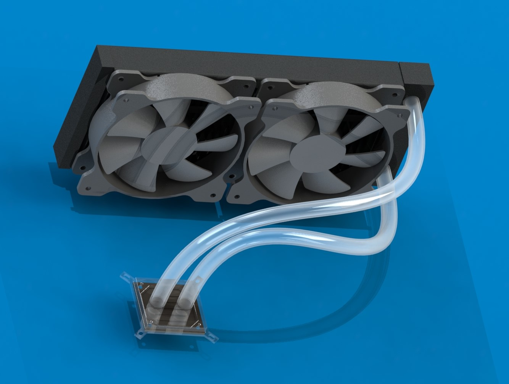

This was my final project for the CAD and Manufacturing course I took.
The goal was to reverse engineer a complex/multi-part product and document the process.
I chose to reverse engineer an EKWB S240 CPU watercooler.

Final Render of CAD Assembly
Objectives:
CAD the component based on the drawing provided
Import the CAD model to ANSYS workbench and apply a custom material profile
Verify the engine will remain under yield stress based on a static pressure load
Obtain deformation plot for additional information
Challenges:
Most of the challenges arose from setting up ANSYS.
Having done Solidworks FEA before, the fixed boundary conditions and static pressure load was easy to do.
However, I had to learn how to define a custom material profile and import a Solidworks model to Ansys.
Results:
A static elasticity analysis was performed using ANSYS workbench to obtain the following results:
Deformation plot of engine block to determine if there would be any mating issues with other components
Equivalent von mises stress plot with maximum von mises stress located to prove the engine block stays below yield stress
Convergence study ensuring no accuracy error resulting from the node and element numbers used